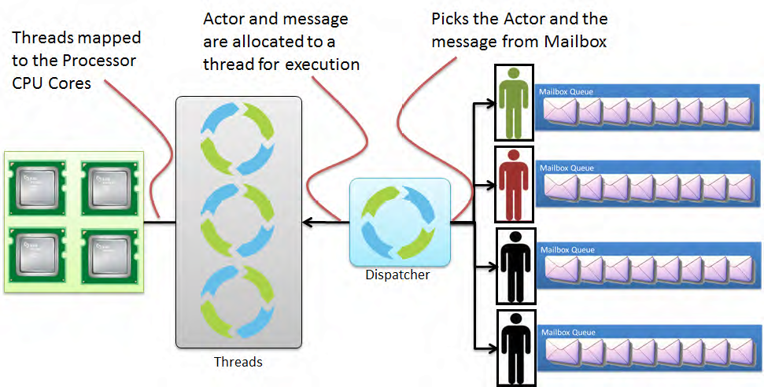
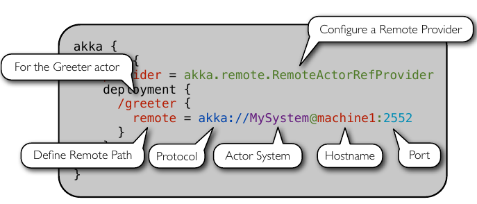
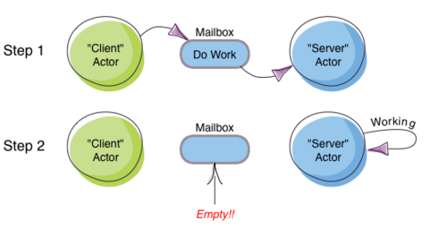
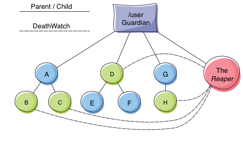
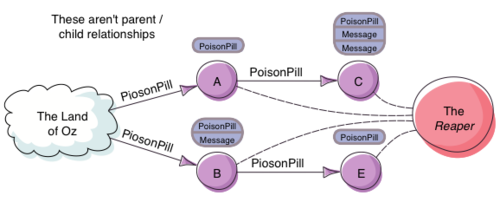

Akka Actors with Scala
Table of Contents
1 Overview of Lectures
- What do these lecture notes do?
- Describe Scala minimally. Just enough to do Akka. Pretty much ignore its (i) functional programming features, (ii) syntactic conveniences and (iii) type inference [not wholly]. Goto What is Scala?
- Describe Carl Hewitt's Actors Model, comparable in depth to our treatment of SMP, AMP, Shared-Vars, Semaphores. Goto Actors Model.
- Describe Akka, an implementation of Actors. Just enough so you can re-do all the classics such as Readers/Writers, Dining Philosophers. Goto What is Akka?
2 What is Scala?
- Scala can be thought of as a significantly enhanced Java.
- Combines OOP and Functional Programming.
- Uses Type Inference heavily.
- Compiles to JVM .class files.
- Scala is described fully at http://www.scala-lang.org/. Its compilers and other tools are open source.
- Scala Practical My lecture notes. Required Reading.
3 Actors Model
- A model of distributed computation.
- Uses AMP only.
- No semaphores. No SMP.
- Can we build these in Actors?
- On Actors My lecture notes. Required Reading.
4 What is Akka?
- Akka is an open source implementation of Hewitt's (pure) Actor Model, as a library in Scala. It makes practical concessions to the pure actor model.
- "Akka is a toolkit and runtime for building highly concurrent, distributed, and fault tolerant event-driven applications on the JVM" http://www.akka.io. [Note the use of concurrent and distributed.]
- Akka helps with scaling both UP (utilizing multi-core processors) and OUT (utilizing the cloud/ grid/ cluster).
- For fault-tolerance, Akka adopts the "Let it crash" model, which has been used with great success in the telecom industry to build applications that self-heal and never stop.
- Reactive Applications = Concurrency + Events
4.1 What is Akka? v.Frivolous
- https://www.google.com/search?q=akka+mountain
- https://www.google.com/search?q=akka+finnish+goddess&safe=active
- https://www.google.com/search?q=akka+indian&safe=active
- https://www.google.com/search?q=akka+telugu&safe=active
- Should we give equal time to Bing, Yahoo, DuckDuckGo?
4.2 Who Is Using Akka?

Figure 1: Who Is Using Akka?
4.3 What is Akka? v.nonFrivolous
- Includes an implementation of Actor Model, with improvements for practicality.
- Also includes Software Transactional Memory (STM).
- Event driven, middleware framework
- Part of Typesafe Stack. Open source, Apache License.
- Created by Jonas Bonér.
4.4 Large Scale Examples of Akka
- http://www.playframework.com/ "The High Velocity Web Framework For
Java and Scala" Built on Akka, Play provides predictable and
minimal resource consumption (CPU, memory, threads) for
highly-scalable applications. RESTful by default.
- REST stands for "Representational State Transfer". It describes a web architecture.
- Play https://developer.lightbend.com/start/?group=play
- http://spray.io/
sprayis an open-source toolkit for building REST/HTTP-based integration layers on top of Scala and Akka. It is asynchronous, and actor-based.
4.5 Akka Practical Use Overview
- Versions: Scala 2.11+, Akka 2.3.1+. Code for older versions may not work with these versions. Most, not 100%, are open source.
- https://developer.lightbend.com/guides/akka-quickstart-scala/ Must read and follow.
- The code shown in boxes below is not always self-contained enough to compile it stand-alone.
scala.actoris deprecated. Caution: Many articles on the web are based on scala.actor. Useimport akka.actor. http://docs.scala-lang.org/overviews/core/actors-migration-guide.html- Akka library can be used in Java as well.
- http://www.pykka.org/ with Python.
4.6 How Does Akka work?

Figure 2: How Does Akka work?
4.7 Akka Practical Details
Akka can be used without defining a configuration, since sensible default values are provided.
// application.conf at the root of the class path. akka { loggers = ["akka.event.slf4j.Slf4jLogger"] loglevel = "DEBUG" stdout-loglevel = "WARNING" actor { provider = "akka.cluster.ClusterActorRefProvider" default-dispatcher { # set to 1 for as fair as possible throughput = 10 } } remote { netty.tcp.port = 2552 } }
5 Akka Actor Architecture

Figure 3: Actor Hierarchy and Name Resolution
- An actor in Akka always belongs to a parent. Who is the parent of the first actor you create? "Root Guardian", similar to parent of / in Linux.
- Read further https://doc.akka.io/docs/akka/current/typed/guide/tutorial_1.html#the-akka-actor-hierarchy
6 Akka Ops: Create, Send, Become, Supervise
- Akka has Create, Send, Become, Supervise operations on its actors. These are essential to use Akka.
- Link to Lectures Notes on Ops
7 Routers, Dispatchers, and Schedulers
- A router is a type of actor. Routes incoming messages to outbound actors.
- A dispatcher chooses an actor and a message from the actors mbox, and allocates a thread.
- You can schedule sending of messages and execution of tasks (functions or Runnable).
- Link to Lecture Notes on Routers, Dispatchers, and Schedulers
8 Futures and Promises
- Akka gets Futures and Promises from Scala.
8.1 Futures
- A Future is a placeholder object for a result that has not been computed yet. A related CS term is lazy evaluation.
- A Future may only be assigned once. Needs an
ExecutionContext Invoking the
futuremethod starts an asynchronous computation and returns a future. The result becomes available once the future completes.import scala.concurrent.{ future, promise } import scala.concurrent.ExecutionContext.Implicits.global val s = socialNetwork.createSessionFor("user", credentials) val f: Future[List[Friend]] = future { s.getFriends() // may take a while }
8.2 Promises
A Promise is a writable, single-assignment container that completes a future. Methods:
success,failure,completeimport scala.concurrent.{ future, promise } import scala.concurrent.ExecutionContext.Implicits.global val p = promise[T] val f = p.future val prdcr = future { // producer val r = produceSomething() p . success . r continueDoingSomethingUnrelated() } val cnsmr = future { // consumer startDoingSomething() f . onSuccess { case r => doSomethingWithResult() }}
9 Distributed Actor System

Figure 4: Distributed Actor System
9.1 Actor References
- Actor references may be obtained by (i) creating actors or (ii) looking them up
- Typically, we create actors beneath the guardian actor using the
ActorSystem.actorOfmethod and then … - Spawn the actor tree using
ActorContext.actorOf.
9.1.1 Looking up Actors by Concrete Path
ActorSystem.actorSelectionmethod- Send a message, such as the built-in
Identifymessage, to the actor and use thesenderreference of a reply from the actor. actorForis deprecated in favor ofactorSelectionbecause actor references acquired with actorFor behave differently for local and remote actors. Beware: actorOf vs. actorSelection vs. actorFor- Matching on paths similar to shells «*» and «?»:
context.actorSelection("../*") ! msg
9.1.2 Absolute vs. Relative Paths
- Send a message to a specific sibling:
context . actorSelection ("../brother") ! msg- Absolute paths:
context.actorSelection("/user/serviceA") ! msg
9.2 Remote Actors and Akka Clusters
- Remote Actors ActorSystem configuration

Figure 5: Remote Actors ActorSystem configuration
9.3 Clusters
- Automatic cluster-wide deployment
- Decentralized P2P gossip-based cluster membership
- Leader “election”
- Adaptive load-balancing (based on runtime metrics)
- Automatic replication with automatic fail-over upon node crash
- Automatic adaptive cluster rebalancing
- Highly available configuration service
9.4 Enable Clustering
akka {
actor {
provider = "akka.cluster.ClusterActorRefProvider"
...
}
extensions = ["akka.cluster.Cluster"]
cluster {
seed-nodes = [
"akka://ClusterSystem@127.0.0.1:2551",
"akka://ClusterSystem@127.0.0.1:2552"
]
auto-down = on
}
}
9.5 Remote Deployment

Figure 6: Remote Deployment
10 Termination
What Does "Finished" Mean? The most natural answer to this question appears to be, "When all the Mailboxes are empty." Natural, yes; correct, no. :)

Figure 7: Actor System terminated?
10.1 The Reaper

Figure 8: Actor System Reaper
10.2 Reaper Source Code
import akka.actor.{Actor, ActorRef, Terminated}
import scala.collection.mutable.ArrayBuffer
object Reaper { case class WatchMe(ref: ActorRef); }
abstract class Reaper extends Actor {
import Reaper._
val watched = ArrayBuffer.empty[ActorRef]
/* Derivations must implement this method. Called
* when everything is dead */
def allSoulsReaped(): Unit
final def receive = {
case WatchMe(ref) =>
context.watch(ref)
watched += ref
case Terminated(ref) =>
watched -= ref
if (watched.isEmpty) allSoulsReaped()
}
}
10.3 PoisonPill

Figure 9: Application with PoisonPill
11 References
- https://doc.akka.io/docs/akka/current/ Nearly all the code snippets and figures are from here. Reference.
- Jonas Boner, "Above the Clouds: Introducing Akka", 2011. Web search. Video or pdf. Highly recommended.
- https://doc.akka.io/docs/akka/current/typed/guide/ Getting Started
Guide. Must visit. The following are linked there.
- Introduction to Akka. Required Reading
- Part 1: Actor Architecture. Required Reading
- Part 2: Creating the First Actor. Required Reading
- Part 3: Working with Device [in the small] Actors Optional Reading
- Part 4: Working with Device Groups Optional Reading
- Part 5: Querying Device Groups Optional Reading
- http://allaboutscala.com/scala-frameworks/akka/ 2020 Recommended Reading.